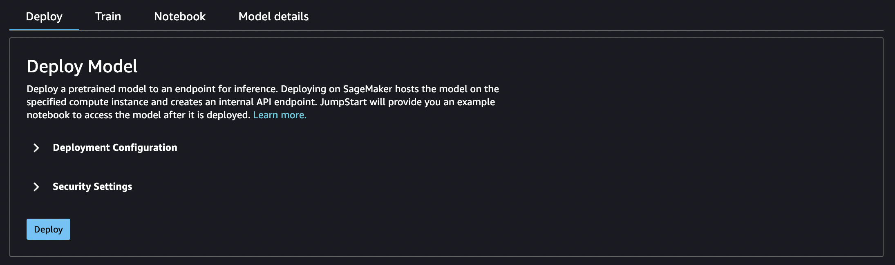
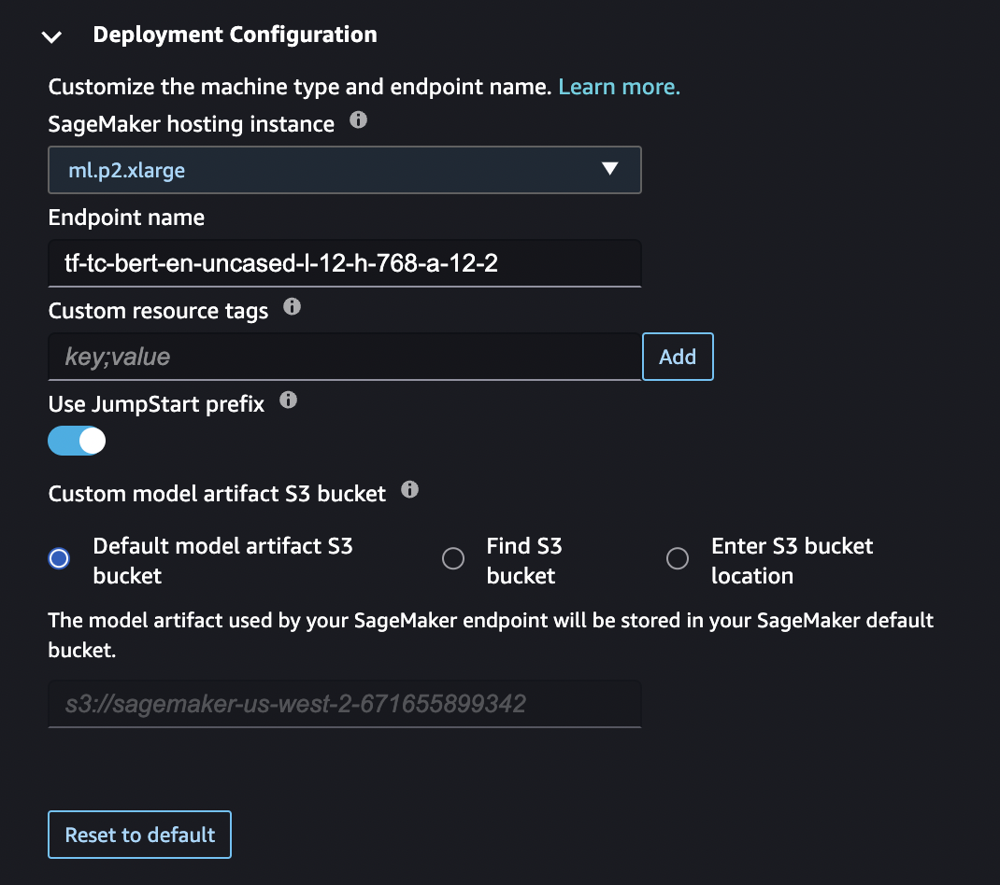
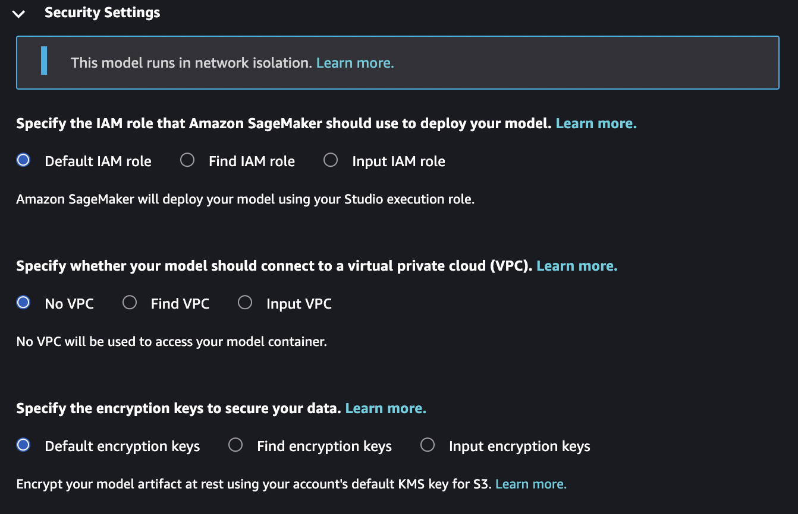
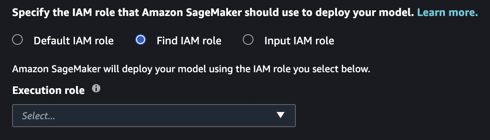
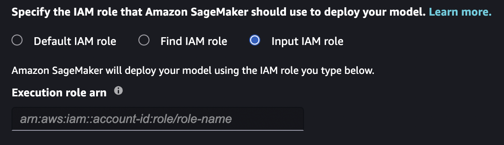
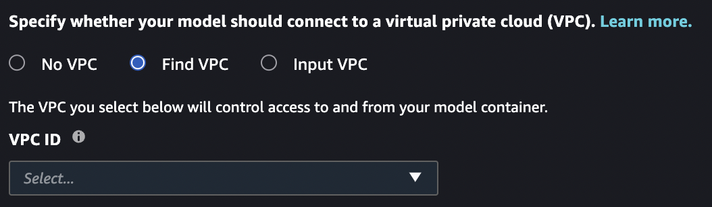
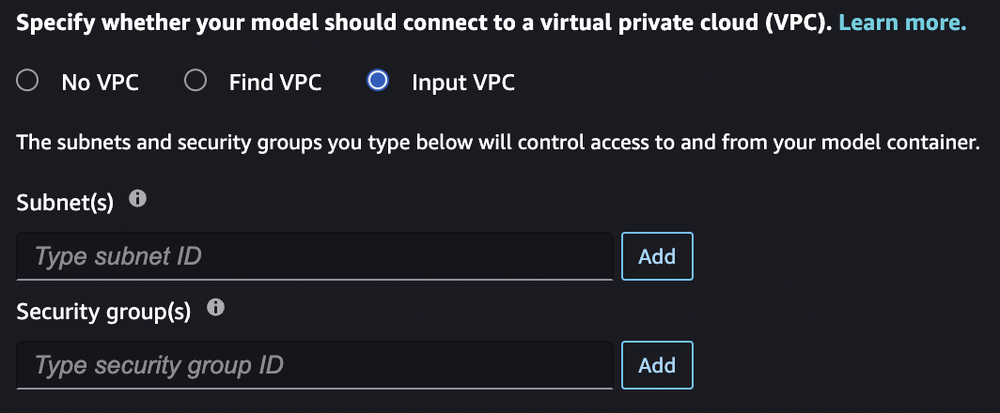
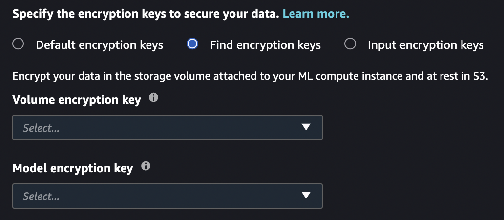
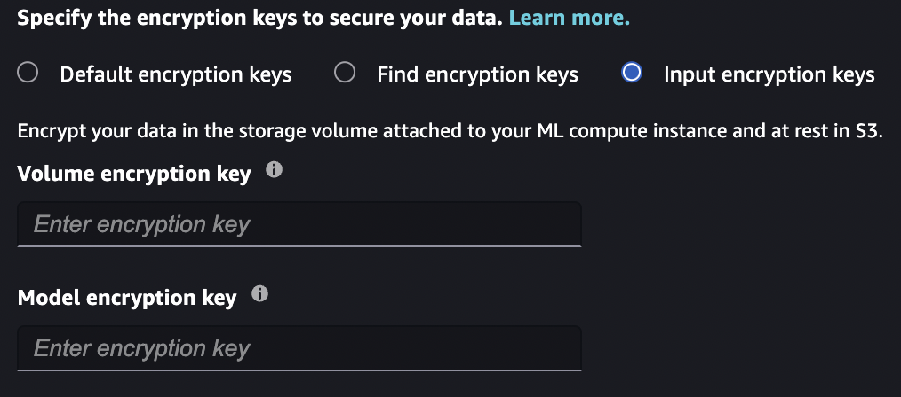

Deploy a Model
When you deploy a model from JumpStart, SageMaker hosts the model and deploys an endpoint that you can use for inference. JumpStart also provides an example notebook that you can use to access the model after it's deployed.
Model deployment configuration
After you choose a model, the model's tab opens. In the Deploy Model pane, choose Deployment Configuration to configure your model deployment.

The default instance type for deploying a model depends on the model. The instance
type is the hardware that the training job runs on. In the following example, the
ml.p2.xlarge instance is the default for this particular BERT model.
You can also change the endpoint name, add key;value resource tags,
activate or deactive the jumpstart- prefix for any JumpStart resources
related to the model, and specify an Amazon S3 bucket for storing model artifacts used by your
SageMaker endpoint.

Choose Security Settings to specify the AWS Identity and Access Management (IAM ) role, Amazon Virtual Private Cloud (Amazon VPC), and encryption keys for the model.

Model deployment security
When you deploy a model with JumpStart, you can specify an IAM role, Amazon VPC, and encryption keys for the model. If you don't specify any values for these entries: The default IAM role is your Studio runtime role; default encryption is used; no Amazon VPC is used.
IAM role
You can select an IAM role that is passed as part of training jobs and hosting jobs. SageMaker uses this role to access training data and model artifacts. If you don't select an IAM role, SageMaker deploys the model using your Studio runtime role. For more information about IAM roles, see Identity and Access Management for Amazon SageMaker.
The role that you pass must have access to the resources that the model needs, and must include all of the following.
-
For training jobs: CreateTrainingJob API: Execution Role Permissions.
-
For hosting jobs: CreateModel API: Execution Role Permissions.
Note
You can scope down the Amazon S3 permissions granted in each of the following roles. Do this by using the ARN of your Amazon Simple Storage Service (Amazon S3) bucket and the JumpStart Amazon S3 bucket.
{ "Effect": "Allow", "Action": [ "s3:GetObject", "s3:PutObject", "s3:ListMultipartUploadParts", "s3:ListBucket" ], "Resources": [ "arn:aws:s3:::jumpstart-cache-prod-<region>/*", "arn:aws:s3:::jumpstart-cache-prod-<region>", "arn:aws:s3:::bucket/*" ] }
Find IAM role
If you select this option, you must select an existing IAM role from the dropdown list.

Input IAM role
If you select this option, you must manually enter the ARN for an existing IAM
role. If your Studio runtime role or Amazon VPC block the iam:list* call,
you must use this option to use an existing IAM role.

Amazon VPC
All JumpStart models run in network isolation mode. After the model container is created, no more calls can be made. You can select an Amazon VPC that is passed as part of training jobs and hosting jobs. SageMaker uses this Amazon VPC to push and pull resources from your Amazon S3 bucket. This Amazon VPC is different from the Amazon VPC that limits access to the public internet from your Studio instance. For more information about the Studio Amazon VPC, see Connect SageMaker Studio Notebooks in a VPC to External Resources.
The Amazon VPC that you pass does not need access to the public internet, but it does need access to Amazon S3. The Amazon VPC endpoint for Amazon S3 must allow access to at least the following resources that the model needs.
{ "Effect": "Allow", "Action": [ "s3:GetObject", "s3:PutObject", "s3:ListMultipartUploadParts", "s3:ListBucket" ], "Resources": [ "arn:aws:s3:::jumpstart-cache-prod-<region>/*", "arn:aws:s3:::jumpstart-cache-prod-<region>", "arn:aws:s3:::bucket/*" ] }
If you do not select an Amazon VPC, no Amazon VPC is used.
Find VPC
If you select this option, you must select an existing Amazon VPC from the dropdown list. After you select an Amazon VPC, you must select a subnet and security group for your Amazon VPC. For more information about subnets and security groups, see Overview of VPCs and subnets.

Input VPC
If you select this option, you must manually select the subnet and security group
that compose your Amazon VPC. If your Studio runtime role or Amazon VPC blocks the
ec2:list* call, you must use this option to select the subnet and
security group.

Encryption keys
You can select an AWS KMS key that is passed as part of training jobs and hosting jobs. SageMaker uses this key to encrypt the Amazon EBS volume for the container, and the repackaged model in Amazon S3 for hosting jobs and the output for training jobs. For more information about AWS KMS keys, see AWS KMS keys.
The key that you pass must trust the IAM role that you pass. If you do not specify an IAM role, the AWS KMS key must trust your Studio runtime role.
If you do not select an AWS KMS key, SageMaker provides default encryption for the data in the Amazon EBS volume and the Amazon S3 artifacts.
Find encryption keys
If you select this option, you must select existing AWS KMS keys from the dropdown list.

Input encryption keys
If you select this option, you must manually enter the AWS KMS keys. If your
Studio execution role or Amazon VPC block the kms:list* call, you must use
this option to select existing AWS KMS keys.

Configure default values for JumpStart models
You can configure default values for parameters such as IAM roles, VPCs, and KMS keys to pre-populate for JumpStart model deployment and training. After configuring default values, the Studio UI automatically provides your specified security settings and tags to SageMaker JumpStart models to simplify deployment and training workflows. Administrators and end-users can initialize default values specified in a configuration file in YAML format.
By default, the SageMaker Python SDK uses two configuration files: one for the
administrator and one for the user. Using the admininistrator configuration file,
administrators can define a set of default values. End-users can override values set in
the administrator configuration file and set additional default values using the end-user
configuration file. For more information, see Default configuration file location
The following code sample lists the default locations of the configuration files when using the SageMaker Python SDK in Amazon SageMaker Studio.
# Location of the admin config file /etc/xdg/sagemaker/config.yaml # Location of the user config file /root/.config/sagemaker/config.yaml
Values specified in the user configuration file override values set in the administrator configuration file. The configuration file is unique to each user profile within an Amazon SageMaker Domain. The user profile's Studio application is directly associated with the user profile. For more information, see Domain User Profiles.
Administrators can optionally set configuration defaults for JumpStart model training and
deployment through JupyterServer lifecycle configurations. For more
information, see Create and associate a lifecycle configuration.
Your configuration file should adhere to the SageMaker Python SDK configuration file structureTrainingJob, Model, and
EndpointConfig configurations apply to JumpStart model training and deployment
default values.
SchemaVersion: '1.0' SageMaker: TrainingJob: OutputDataConfig: KmsKeyId:example-key-idResourceConfig: # Training configuration - Volume encryption key VolumeKmsKeyId:example-key-id# Training configuration form - IAM role RoleArn: arn:aws:iam::123456789012:role/SageMakerExecutionRole VpcConfig: # Training configuration - Security groups SecurityGroupIds: -sg-1-sg-2# Training configuration - Subnets Subnets: -subnet-1-subnet-2# Training configuration - Custom resource tags Tags: - Key:Example-keyValue:Example-valueModel: EnableNetworkIsolation:true# Deployment configuration - IAM role ExecutionRoleArn: arn:aws:iam::123456789012:role/SageMakerExecutionRole VpcConfig: # Deployment configuration - Security groups SecurityGroupIds: -sg-1-sg-2# Deployment configuration - Subnets Subnets: -subnet-1-subnet-2EndpointConfig: AsyncInferenceConfig: OutputConfig: KmsKeyId:example-key-idDataCaptureConfig: # Deployment configuration - Volume encryption key KmsKeyId:example-key-idKmsKeyId:example-key-id# Deployment configuration - Custom resource tags Tags: - Key:Example-keyValue:Example-value